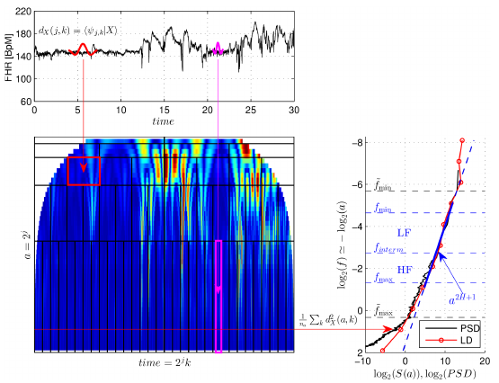
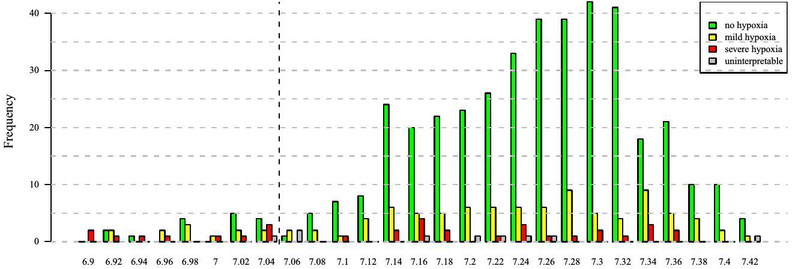
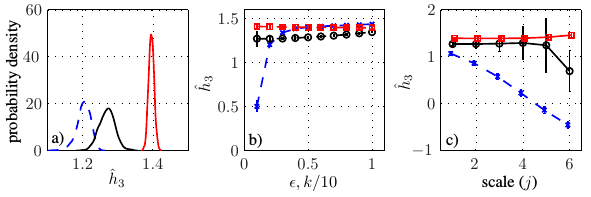
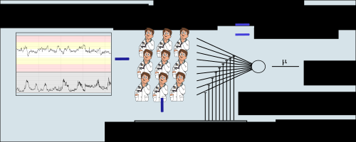
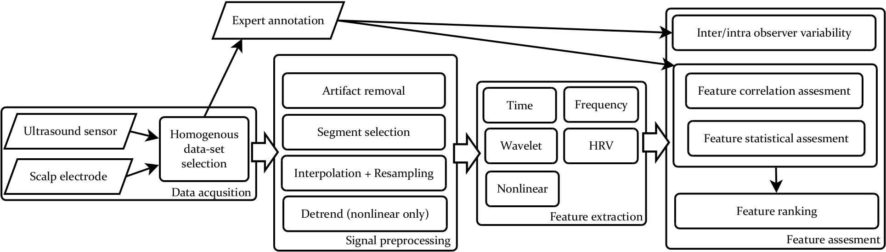

A full list of publications:
Google
Scholar
Ph.D. thesis: Complex approach to fetal heart rate analysis: A hierarchical classification model
Selected Publications
|
Georgoulas, G., Karvelis, P., Chudáček, V., Spilka J, et al.
An exploratory approach to fetal heart rate–pH-based systems
In SIViP 15, 43–51 (2021).
web | .pdf | .bib | |
|
|
Georgieva, A, Abry, P, Chudáček, V, et al.
Computer‐based intrapartum fetal monitoring and beyond: A review of the 2nd Workshop on
Signal Processing and Monitoring in Labor (October 2017, Oxford, UK)
In Acta Obstet Gynecol Scand 2019; 98: 1207‐ 1217.
web | .pdf | .bib | |
|

|
P. Abry, J. Spilka, R. Leonarduzzi, V. Chudáček, N. Pustelnik, M. Doret
Sparse learning for Intrapartum fetal heart rate analysis
In Biomedical Physics Engineering Express 4(3) 034002, 2018.
web | .pdf | .bib | paper results |

|
J. Spilka, J. Frecon, R. Leonarduzzi, N. Pustelnik, P. Abry, M. Doret
Sparse Support Vector Machine for Intrapartum Fetal Heart Rate Classification
In IEEE Journal of Biomedical and Health Informatics, 21(3), 664 - 671, 2017.
web | .pdf | .bib |
|
G. Georgoulas, P. Karvelis, J. Spilka, V. Chudáček, C. D. Stylios, L. Lhotská
Investigating pH based evaluation of fetal heart rate (FHR) recordings
In Health and Technology 10.1007/s12553-017-0201-7, 2017.
web | .pdf | .bib |
|

|
J. Spilka, R. Leonarduzzi, V. Chudáček, P. Abry, M. Doret
Fetal Heart Rate Classification: First vs. Second Stage of Labor
In 8th International Workshop on Biosignal Interpretation, 2016.
web | .pdf | .bib |
|
J. Spilka, V. Chudáček , M. Huptych, R. Leonarduzzi, P. Abry, M. Doret
Intrapartum Fetal Heart Rate Classification: Cross-Database Evaluation
In XIV Mediterranean Conference on Medical and Biological Engineering and Computing 2016:
MEDICON 2016, April 2016. web | .pdf | .bib |
|
|  |
M. Doret, J. Spilka, V. Chudáček, P. Goncalves, P. Abry
Fractal Analysis and Hurst Parameter for Intrapartum Fetal Heart Rate Variability
Analysis: A Versatile Alternative to Frequency Bands and LF/HF Ratio
In PLoS ONE, vol. 10, no. 8, p. e0136661, 08 2015. web | .pdf | .bib |

|
J. Spilka, J. Frecon, R. Leonarduzzi, N. Pustelnik, P. Abry, M. Doret
Intrapartum Fetal Heart Rate Classification from Trajectory in Sparse SVM feature
space
In Ann Int Conf IEEE Eng Med Biol Soc (EMBC), Milan, Italy, August 2015, pp.
2335--2338. web | .pdf | .bib |
|
R. Leonarduzzi, J. Spilka, J. Frecon, H. Wendt, N. Pustelnik, S. Jaffard, P. Abry, M. Doret
p-leader Multifractal Analysis and Sparse SVM for Intrapartum Fetal Acidosis
Detection
In Ann Int Conf IEEE Eng Med Biol Soc (EMBC) Milan, Italy, August 2015, pp.
1971-1974. web | .pdf | .bib |
|
|  |
L. Hruban, J. Spilka, V. Chudáček, P. Janků, et al.
Agreement on intrapartum cardiotocogram recordings between expert obstetricians
In Journal of Evaluation in Clinical Practice, 21(4): 694-702, 2015. web | .pdf | .bib |
|
M. Burša, L. Lhotská, V. Chudáček, J. Spilka, P. Janků, L. Hruban
Information retrieval from hospital information system: Increasing effectivity using
swarm
intelligence
In Journal of Applied Logic pages 126–137. Springer, 2015. web | .pdf | .bib |
|

|
P. Karvelis, J. Spilka, G. Georgoulas, V. Chudáček, C. Stylios, L. Lhotská
Combining Latent Class Analysis Labeling with Multiclass Approach for Fetal Heart Rate
Categorization
In Physiological Measurement 36, 1001-1024, 2015. web | .pdf | .bib |
|
R.F. Leonarduzzi, J. Spilka, H. Wendt, S. Jaffard, M.E. Torres, P. Abry, and M. Doret
p-Leader Based Classification of First Stage Intrapartum Fetal HRV
In Ariel Braidot and Alejandro Hadad, editors, VI Latin American Congress on Biomedical
Engineering CLAIB 2014, Paraná, Argentina 29, 30 & 31 October 2014, volume 49 of IFMBE
Proceedings, pages 504–507. Springer International Publishing, 2015. web | .pdf | .bib |
|
|
J. Spilka, P. Abry, P. Goncalves, and M. Doret
Impacts of First and Second Labour Stages on Hurst Parameter
In Computing in Cardiology, Volume 41, pages 777–780, 2014. web | .pdf | .bib |
|
|  |
J. Spilka, S.G. Roux, N.B. Garnier, P. Abry, P. Goncalves, and M. Doret
Nearest-neighbor based wavelet entropy rate measures for intrapartum fetal heart rate
variability
In Engineering in Medicine and Biology Society (EMBC), 2014 36th Annual International
Conference of the IEEE, 2813–2816, IEEE, 2014. web | .pdf | .bib |
|  |
J. Spilka, V. Chudáček, P. Janků, L. Hruban, M. Burša, M. Huptych, L. Zach, L. Lhotská.
Analysis of obstetricians’ decision making on CTG recordings.
Journal of Biomedical Informatics 2014, 51:72-79, 2014 web | .pdf | .bib |

|
V. Chudáček, J. Spilka, M. Burša, P. Janků, L. Hruban, M. Huptych, L. Lhotská.
Open access intrapartum CTG database.
BMC Pregnancy and Childbirth 2014 14(1):16, 2014. web | .pdf | .bib |

|
J. Spilka, V. Chudáček, M. Koucký, L. Lhotská, M. Huptych, P. Janků, G. Georgoulas, C. Stylios.
Using nonlinear features for fetal heart rate classification.
Biomedical Signal Processing and Control 7(4):350–357, 2012. web | .pdf | .bib |
|  |
V. Chudáček, J. Spilka, P. Janků, M. Koucký, L. Lhotská, and M. Huptych.
Automatic evaluation of intrapartum fetal heart rate recordings:
A comprehensive analysis of useful features.
Physiological Measurement 32:1347–1360, 2011. web | .pdf | .bib |

|
J. Spilka, V. Chudáček, V. Kužílek, L. Lhotská, and M. Hanuliak.
Detection of Inferior Myocardial Infarction: A Comparison of Various Decision Systems
and Learning Algorithms.
In Computers in Cardiology volume 37, 2010 web | .pdf | .bib |